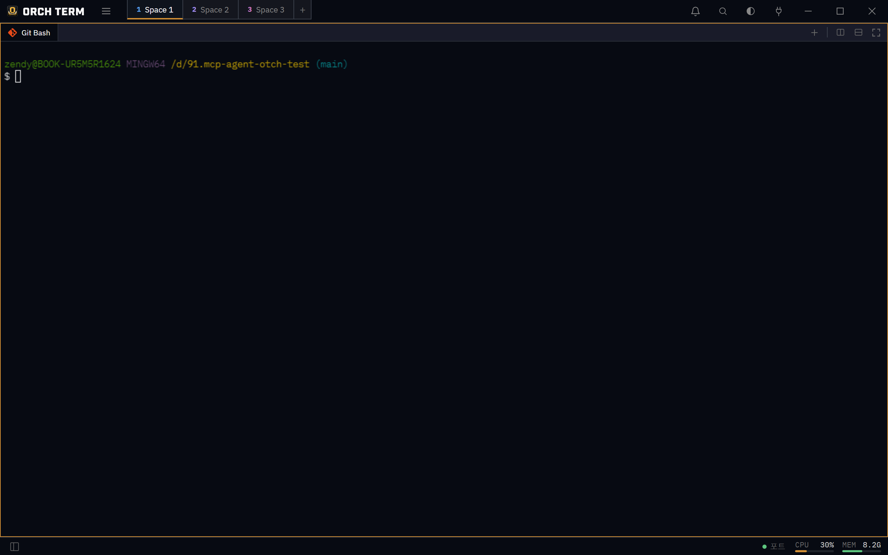

핵심 기능 · 터미널
터미널
Orch term의 바탕. 진짜 셸 세션을 빠르게 그리고, 한/영 입력·이모지·줄바꿈까지 매끄럽게 다룹니다.
새 터미널 열기
새 탭의 버튼이나 패널 우상단 액션으로 엽니다. 새 터미널은 활성 프로젝트 루트(탐색기 기준)에서 시작합니다. ＋를 누르면 설치된 셸을 자동 감지한 선택 드롭다운이 열립니다.
새 터미널 — 셸 선택
① 설치된 셸 목록 — 골라서 열고, 기본으로 지정할 수 있습니다.
고른 셸이 활성 패널의 새 탭으로 열립니다. 시작 직후 친 첫 키도 유실되지 않습니다.

② 패널 우상단 액션: 아래로 분할 · 오른쪽 분할 · 최대화 · 닫기.
복사 · 붙여넣기
Ctrl+C는 선택 영역이 있으면 복사, 없으면 인터럽트로 동작하고, Ctrl+V는 붙여넣기입니다 — 한/영 입력 상태와 무관하게 작동합니다. Windows 클립보드 기록(Win+V)도 지원하며, 이미지를 붙여넣으면 파일로 첨부되어 claude 등이 그대로 읽습니다.
줄바꿈 (제출 없이)
AI CLI(Claude Code 등)에 여러 줄을 입력할 때 Shift+Enter 또는 Ctrl+Enter로 제출 대신 줄바꿈을 보냅니다. 한글 입력 조합 중에도 글자와 순서가 보존됩니다.
스크롤백 · 맨 아래로
터미널이 보관하는 히스토리 줄 수(스크롤백)는 기본 1000줄, 설정 → 터미널 → 스크롤백에서 100~50,000줄로 조정하며 즉시 반영됩니다. 위로 스크롤하면 우하단에 맨 아래로 버튼이 나타나 최신 출력으로 점프합니다.
셸 종료 · 자동 닫기
셸이 끝나면(exit) 탭이 자동으로 닫힙니다. 단일 패널·단일 탭이면 빈 화면 대신 새 터미널로 대체합니다. 탭을 닫으면 그 아래 프로세스 트리 전체가 정리되어 좀비 프로세스를 남기지 않습니다.
단축키
| 키 | 동작 |
|---|---|
| Ctrl+C | 선택 시 복사, 없으면 인터럽트 |
| Ctrl+V | 붙여넣기 (Win+V 포함) |
| Shift+Enter | 줄바꿈 (제출 안 함) |
| Ctrl+Enter | 줄바꿈 (제출 안 함) |